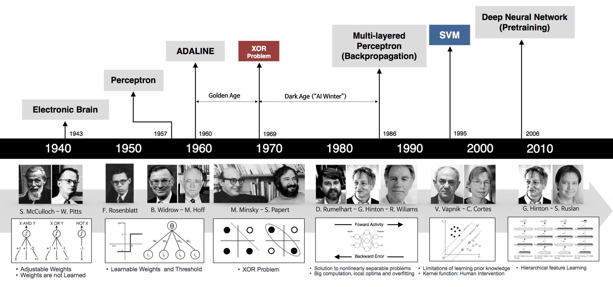
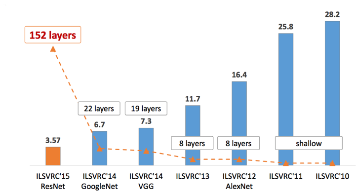

Lịch sử hình thành và phát triển
Deep Learning chỉ mới xuất hiện gần đây nhưng những nền tảng cơ bản đã xuất hiện từ lâu.
Hình 3: Lịch sử phát triển của Deep Learning qua các giai đoạn
- Perceptron (60s)
- MLP và Backpropagation ra đời (80s)
- Mùa đông AI thứ hai (90s - đầu 2000s)
- Cái tên được làm mới – Deep Learning (2006)
- Đột phá (2012)
Một trong những nền móng đầu tiên của Neural Network và Deep Learning là Perceptron Learning Algorithm (hoặc gọn là Perceptron). Perceptron là một thuật toán Supervised Learning giúp giải quyết bài toán phân lớp nhị phân, được khởi nguồn bởi Frank Rosenblatt năm 1957 trong một nghiên cứu được tài trợ bởi Văn phòng nghiên cứu hải quân Hoa Kỳ (U.S Office of Naval Research – từ một cơ quan liên quan đến quân sự). Thuật toán Perceptron được chứng minh là hội tụ nếu hai lớp dữ liệu là Linearly Separable. Với thành công này, năm 1958, trong một hội thảo, Rosenblatt đã có một phát biểu gây tranh cãi. Từ phát biểu này, tờ New York Times đã có một bài báo cho rằng Perceptron được Hải quân Hoa Kỳ mong đợi “có thể đi, nói chuyện, nhìn, viết, tự sinh sản, và tự nhận thức được sự tồn tại của mình”. (Chúng ta biết rằng cho tới giờ các hệ thống nâng cao hơn Perceptron nhiều lần vẫn chưa thể).
Mặc dù thuật toán này mang lại nhiều kỳ vọng, nó nhanh chóng được chứng minh không thể giải quyết những bài toán đơn giản. Năm 1969, Marvin Minsky và Seymour Papert trong cuốn sách nổi tiếng Perceptrons đã chứng minh rằng không thể ‘học’ được hàm số XOR khi sử dụng Perceptron. Phát hiện này làm choáng váng giới khoa học thời gian đó (bây giờ chúng ta thấy việc này khá hiển nhiên). Perceptron được chứng minh rằng chỉ hoạt động nếu dữ liệu là Linearly Separable. Phát hiện này khiến cho các nghiên cứu về Perceptron bị gián đoạn gần 20 năm. Thời kỳ này còn được gọi là Mùa đông AI thứ nhất (The First AI winter).
Geoffrey Hinton tốt nghiệp PhD ngành Neural Networks năm 1978. Năm 1986, ông cùng với hai tác giả khác xuất bản một bài báo khoa học trên Nature với tựa đề “Learning Representations by Back-propagating errors”. Trong bài báo này, nhóm của ông chứng minh rằng Neural Nets với nhiều Hidden layer (được gọi là multi-layer perceptron hoặc MLP) có thể được huấn luyện một cách hiệu quả dựa trên một quy trình đơn giản được gọi là backpropagation (backpropagation là tên gọi mỹ miều của quy tắc chuỗi – chain rule – trong tính đạo hàm. Việc tính được đạo hàm của hàm số phức tạp mô tả quan hệ giữa đầu vào và đầu ra của một Neural Net là rất quan trọng vì hầu hết các thuật toán tối ưu đều được thực hiện thông qua việc tính đạo hàm, gradient descent là một ví dụ). Việc này giúp Neural Nets thoát được những hạn chế của perceptron về việc chỉ biểu diễn được các quan hệ tuyến tính. Để biểu diễn các quan hệ phi tuyến, phía sau mỗi layer là một hàm kích hoạt phi tuyến, ví dụ hàm sigmoid hoặc tanh. (ReLU ra đời năm 2012). Với hidden layers, neural nets được chứng minh rằng có khả năng xấp xỉ hầu hết bất kỳ hàm số nào qua một định lý được gọi là Universal Approximation Theorem. Neurel nets quay trở lại cuộc chơi.
Thuật toán này mang lại một vài thành công ban đầu, nổi trội là Convolutional Neural Nets (convnets hay CNN) (còn được gọi là LeNet) cho bài toán nhận dạng chữ số viết tay được khởi nguồn bởi Yann LeCun tại ATT Bell Labs. Dưới đây là bản demo được lấy từ trang web của LeNet, network là một CNN với 5 layer, còn được gọi là LeNet5 (1998)
Hình 4: Mô hình nhận dạng số viết tay LeNet
Mô hình này được sử dụng rộng rãi trong các hệ thống đọc số viết tay trên các check và mã vùng bưu điện của nước Mỹ. LeNet là thuật toán tốt nhất thời gian đó cho bài toán nhận dạng ảnh chữ số viết tay. Nó tốt hơn MLP thông thường (với fully connected layer) vì nó có khả năng trích xuất được đặc trưng trong không gian hai chiều của ảnh thông qua các filters (bộ lọc) hai chiều. Hơn nữa, các filter này nhỏ nên việc lưu trữ và tính toán cũng tốt hơn so với MLP thông thường
Các mô hình tương tự được kỳ vọng sẽ giải quyết nhiều bài toán Image Classification khác. Tuy nhiên, không như các chữ số, các loại ảnh khác lại rất hạn chế vì máy ảnh số chưa phổ biến tại thời điểm đó. Ảnh được gán nhãn lại càng hiếm. Trong khi để có thể huấn luyện được mô hình convnets, ta cần rất nhiều dữ liệu huấn luyện. Ngay cả khi dữ liệu có đủ, một vấn đề nan giải khác là khả năng tính toán của các máy tính thời đó còn rất hạn chế.
Một hạn chế khác của các kiến trúc MLP nói chung là hàm mất mát không phải là một hàm lồi. Việc này khiến cho việc tìm nghiệm tối ưu toàn cục cho bài toán tối ưu hàm mất mát trở nên rất khó khăn. Một vấn đề khác liên quan đến giới hạn tính toán của máy tính cũng khiến cho việc huấn luyện MLP không hiệu quả khi số lượng hidden layers lớn lên. Vấn đề này có tên là vanishing gradient.
Nhắc lại rằng hàm kích hoạt được sử dụng thời gian đó là sigmoid hoặc tanh – là các hàm bị chặn trong khoảng (0, 1) hoặc (-1, 1) (Nhắc lại đạo hàm của hàm sigmoid (z)(z) là (z)(1(z))(z)(1(z)) là tích của hai số nhỏ hơn 1). Khi sử dụng Backpropagation để tính đạo hàm cho các ma trận hệ số ở các lớp đầu tiên, ta cần phải nhân rất nhiều các giá trị nhỏ hơn 1 với nhau. Việc này khiến cho nhiều đạo hàm thành phần bằng 0 do xấp xỉ tính toán. Khi đạo hàm của một thành phần bằng 0, nó sẽ không được cập nhật thông qua Gradient Descent!
Những hạn chế này khiến cho Neural Nets một lần nữa rơi vào thời kỳ băng giá. Vào thời điểm những năm 1990 và đầu những năm 2000, Neural Nets dần được thay thế bởi support vector machines –SVM. SVMs có ưu điểm là bài toán tối ưu để tìm các tham số của nó là một bài toán lồi – có nhiều các thuật toán tối ưu hiệu quả giúp tìm nghiệm của nó. Các kỹ thuật về kernel cũng phát triển giúp SVMs giải quyết được cả các vấn đề về việc dữ liệu không phân biệt tuyến tính. Nhiều nhà khoa học làm Machine Learning chuyển sang nghiên cứu SVM trong thời gian đó, trừ một vài nhà khoa học cứng đầu. . .
Năm 2006, Hinton một lần nữa cho rằng ông biết bộ não hoạt động như thế nào, và giới thiệu ý tưởng của tiền huấn luyện không giám sát (Unsupervised Pretraining) thông qua Deep Belief Nets (DBN). DBN 6 có thể được xem như sự xếp chồng các Unsupervised Networks đơn giản như Restricted Boltzman Machine hay Autoencoders.
Lấy ví dụ với Autoencoder. Mỗi Autoencoder là một neural net với một hidden layer. Số hidden unit ít hơn số input unit, và số output unit bằng với số input unit. Network này đơn giản được huấn luyện để kết quả ở output layer giống với kết quả ở input layer (và vì vậy được gọi là autoencoder). Quá trình dữ liệu đi từ input layer tới hidden layer có thể coi là mã hoá, quá trình dữ liệu đi từ hidden layer ra output layer có thể được coi là giải mã. Khi output giống với input, ta có thể thấy rằng hidden layer với ít unit hơn có để mã hoá input khá thành công, và có thể được coi mang những tính chất của input. Nếu ta bỏ output layer, cố định (freeze) kết nối giữa input và hidden layer, coi đầu ra của hidden layer là một input mới, sau đó huấn luyện một autoencoder khác, ta được thêm một hidden layer nữa. Quá trình này tiếp tục kéo dài ta sẽ được một network đủ sâu mà output của network lớn này (chính là hidden layer của autoencoder cuối cùng) mang thông tin của input ban đầu. Sau đó ta có thể thêm các layer khác tuỳ thuộc vào bài toán (chẳng hạn thêm softmax layer ở cuối cho bài toán classification). Cả network được huấn luyện thêm một vài epoch nữa. Quá trình này được gọi là tinh chỉnh (fine tuining).
Tại sao quá trình huấn luyện như trên mang lại nhiều lợi ích?
Một trong những hạn chế đã đề cập của MLP là vấn đề vanishing gradient. Những ma trận trọng số ứng với các layer đầu của network rất khó được huấn luyện vì đạo hàm của hàm mất mát theo các ma trận này nhỏ. Với ý tưởng của DBN, các ma trận trọng số ở những hidden layer đầu tiên được tiền huấn luyện (pretrained). Các trọng số được tiền huấn luyện này có thể coi là giá trị khởi tạo tốt cho các hidden layer phía đầu. Việc này giúp phần nào tránh được sự phiền hà của vanishing gradient.
Kể từ đây, neural networks với nhiều hidden layer được đổi tên thành deep learning.
Vấn đề vanishing gradient được giải quyết phần nào (vẫn chưa thực sự triệt để), nhưng vẫn còn những vấn đề khác của deep learning: dữ liệu huấn luyện quá ít, và khả năng tính toán của CPU còn rất hạn chế trong việc huấn luyện các deep networks.
Năm 2010, giáo sư Fei-Fei Li, một giáo sư ngành computer vision đầu ngành tại Stanford, cùng với nhóm của bà tạo ra một cơ sở dữ liệu có tên ImageNet với hàng triệu bức ảnh thuộc 1000 lớp dữ liệu khác nhau đã được gán nhãn. Dự án này được thực hiện nhờ vào sự bùng nổ của internet những năm 2000 và lượng ảnh khổng lồ được upload lên internet thời gian đó. Các bức ảnh này được gán nhãn bởi rất nhiều người (được trả công).
Bộ cơ sở dữ liệu này được cập nhật hàng năm, và kể từ năm 2010, nó được dùng trong một cuộc thi thường niên có tên ImageNet Large Scale Visual Recognition Challenge (ILSVRC). Trong cuộc thi này, dữ liệu huấn luyện được giao cho các đội tham gia. Mỗi đội cần sử dụng dữ liệu này để huấn luyện các mô hình phân lớp, các mô hình này sẽ được áp dụng để dự đoán nhãn của dữ liệu mới (được giữ bởi ban tổ chức). Trong hai năm 2010 và 2011, có rất nhiều đội tham gia. Các mô hình trong hai năm này chủ yếu là sự kết hợp của SVM với các feature được xây dựng bởi các bộ hand-crafted descriptors (SIFT, HoG, v.v.). Mô hình giành chiến thắng có top-5 error rate là 28%). Mô hình giành chiến thắng năm 2011 có top-5 error rate là 26%.
Năm 2012, cũng tại ILSVRC, Alex Krizhevsky, Ilya Sutskever, và Geoffrey Hinton (lại là ông) tham gia và đạt kết quả top-5 error rate 16%. Kết quả này làm sững sờ giới nghiên cứu thời gian đó. Mô hình là một Deep Convolutional Neural Network, sau này được gọi là AlexNet.
Trong bài báo này, rất nhiều các kỹ thuật mới được giới thiệu. Trong đó hai đóng góp nổi bật nhất là hàm ReLU và dropout. Hàm ReLU (ReLU(x)=max(x,0) ReLU(x)=max(x,0)) với cách tính và đạo hàm đơn giản (bằng 1 khi đầu vào không âm, bằng 0 khi ngược lại) giúp tốc độ huấn luyện tăng lên đáng kể. Ngoài ra, việc ReLU không bị chặn trên bởi 1 (như softmax hay tanh) khiến cho vấn đề vanishing gradient cũng được giải quyết phần nào. Dropout cũng là một kỹ thuật đơn giản và cực kỳ hiệu quả. Trong quá trình training, nhiều hidden unit bị tắt ngẫu nhiên và mô hình được huấn luyện trên các bộ tham số còn lại. Trong quá trình test, toàn bộ các unit sẽ được sử dụng. Cách làm này khá là có lý khi đối chiếu với con người. Nếu chỉ dùng một phần năng lực đã đem lại hiệu quả thì dùng toàn bộ năng lực sẽ mang lại hiệu quả cao hơn. Việc này cũng giúp cho mô hình tránh được overfitting và cũng được coi giống với kỹ thuật ensemble trong các hệ thống machine learning khác. Với mỗi cách tắt các unit, ta có một mô hình khác nhau. Với nhiều tổ hợp unit bị tắt khác nhau, ta thu được nhiều mô hình. Việc kết hợp ở cuối cùng được coi như sự kết hợp của nhiều mô hình (và vì vậy, nó giống với ensemble learning).
Một trong những yếu tố quan trọng nhất giúp AlexNet thành công là việc sử dụng GPU (card đồ hoạ) để huấn luyện mô hình. GPU được tạo ra cho game thủ, với khả năng chạy song song nhiều lõi, đã trở thành một công cụ cực kỳ phù hợp với các thuật toán deep learning, giúp tăng tốc thuật toán lên nhiều lần so với CPU.
Sau AlexNet, tất cả các mô hình giành giải cao trong các năm tiếp theo đều là các deep networks (ZFNet 2013, GoogLeNet 2014, VGG 2014, ResNet 2015). Tôi sẽ giành một bài của blog để viết về các kiến trúc quan trọng này. Xu thế chung có thể thấy là các mô hình càng ngày càng deep.
